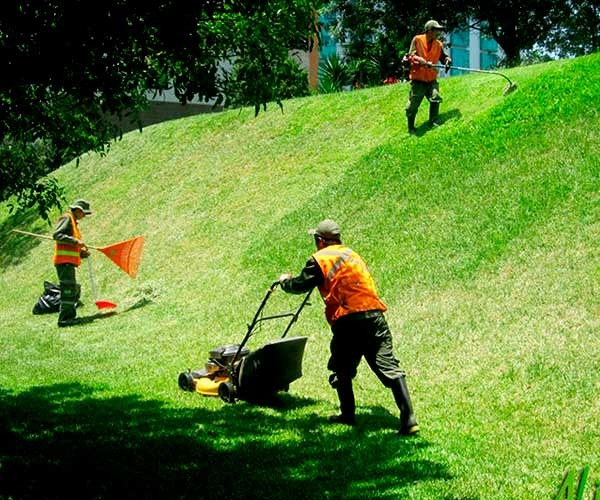

El mantenimiento de áreas verdes es esencial para preservar la naturaleza urbana, promoviendo espacios recreativos y mejorando la calidad del aire. Este servicio se enfoca en la poda, riego y embellecimiento de parques y jardines públicos. Si tienes alguna solicitud o inconveniente relacionado con este servicio, puedes gestionarlo aquí.